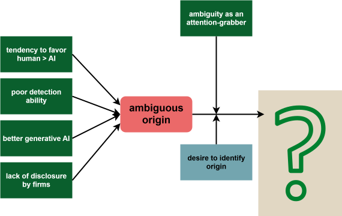

IBT Colloquium
Origin Ambiguity in Online Materials // Open Science Office
2025-12-10
Agenda
(1) Origin Ambiguity
~ 45-60 min
- Phenomenon & Context
- Downstream Effects
- Intended Contribution & Operationalization
(2) Open Science Office
~ 15 min
- Open Science says hi (will be changed)
Origin Ambiguity
Sabou Rani Stocker, Jonas Görgen, Emanuel de Bellis & Anne-Kathrin Klesse


source: RealstrangeAI


source: Tagesanzeiger

source: Vodaphone
Today’s Goal
- What are the downstream consequences of origin ambiguity?
- How can we effectively measure origin ambiguity & its consequences in experimental setups and the real world?
Origin Ambiguity
Working Definition:
Origin Ambiguity: The blurring of provenance that occurs when AI-generated content resemble human-created content so closely that people struggle to tell who (or what) made them.
Origin Ambiguity
People want to know the difference between AI- and human-generated content, but few feel confident they can.

- participants are about as good as chance (Vukojičić, Krstić, and Veinović 2023) identifying AI-generated images
- and slightly worse than chance (Porter and Machery 2024a) to slightly above chance with training at identifying text (Milička et al. 2025)
Today’s AI is the worst AI you will ever use.
(Mollick 2024)Mollick, 2024
Theoretical Background
Preferences
- humans \(>\) algorithms / “AI” (Bigman 2022; Kirk and Givi 2025; Lefkeli, Karataş, and Gürhan-Canli 2024, and others)
- AI-generated content lowers purchase intentions and willingness to recommend a product (Kirk and Givi 2025; Belanche et al. 2025, and others)
- AI-generated content decreases trust (Kirk and Givi 2025; Pfeuffer et al. 2025; Belanche et al. 2025)
But
- negative effects are reduced if content is perceived as authentic regardless of origin (Silver, Newman, and Small 2021; Whittaker et al. 2025, and others)
Theoretical Background
Ambiguity Resolution in Marketing
ambiguity aversion \(\rightarrow\) preference for established products (Muthukrishnan, Wathieu, and Xu 2009)
ambiguous product quality
\(\rightarrow\) reliance on expectations instead of experience (Yi 1993)
\(\rightarrow\) more reliance on information from ads (Hoch and Ha 1986)
ambiguity in ads grabs attention (Kovacheva and Nikolova 2024; Peracchio and Meyers-Levy 1994; Johar 1995; Hagtvedt 2011; Sevilla and Meyer 2020) …
… especially when people are motivated to resolve this ambiguity for one reason or another (Johar 1995; Peracchio and Meyers-Levy 1994; Hagtvedt 2011)
Theoretical Background
Cognitive Tax of Ambiguity
ambiguity introduces cognitive taxes (Franceschetti et al. 2024; Shin, Kim, and Biocca 2019; Tao et al. 2022; Howard 2017)
\(\rightarrow\) cognitive taxes have a negative effect on evidence encoding and ability to retain information (e.g., Shou and Smithson 2015)
ambiguous stimuli (uncanny valley) introduce negative affect (Mori, MacDorman, and Kageki 2012; Seyama and Nagayama 2007, and others) and tax cognitive resources (Shin, Kim, and Biocca 2019; Tao et al. 2022; Howard 2017)
Theoretical Background
Graphical Summary

Graphical summary on related literature.
What are the downstream effects of origin ambiguity?

Graphical summary on related literature.
Origin Inference as a Consequence of Origin Ambiguity

Suggested downstream effect of origin ambiguity: origin inference.
Note: This schematic is a visual summary of potential causes and effects, and not to be read as a finalized model.
Intended Contribution
- combination of streams of research: ambiguity in marketing (materials), cognitive load theory, and consumer-reaction to AI-generated content
- relevance for both consumer-perspective and marketer-perspective:
- does AI-generated content harm informed decision-making?
- is AI-generated content effective?
Research Plan

How could we or should we explore the phenomenon of origin ambiguity?
Thank you!
Open Science
Jana Berkessel & Sabou Rani Stocker
Welcome to the Open Science Office
(there will be a representative title image here)
Context
Background and Outset
- Funding for ~1 year
- Focus on asynchronous resources \(\rightarrow\) posterity & ease of access
- Homepage for students & staff at HSG is currently being built: Open Science Office
We need your Feedback
- Is the information accessible?
- What are we missing?
- Anything else you want to share with us?
Is the Information Accessible?
(8’) Goal 1: let you lose unprompted and see if you can find what we want you to
- Randomly assign a “scenario” and a short survey (reason behind: we don’t have time to go through everything collectively)
Scenarios: 1. You want to find out how HSG supports Open Access publication 2. You want to add some helpful tips about preregistering studies to your course materials 3. You want to book a 1:1 consultation with the Open Science Office 4. You want to know what Open Science practices you can incorporate in the stage of your research process you are currently in
Goal 2: Structure
- Find out if the structure we have makes sense:
- the “open science strategy” thing still bothers me a bit
- are we missing a crucial component?
- are there components that you wonder why we need them?
What are we missing?
(5’) Goal 3: Find the gaps in the information we currently provide \(\rightarrow\) we only know what we know, so tell us what we don’t know
- short plenum-round
Anytheng else to Share?
(3’) - short plenum round
what’s next
schaffen wir nicht fertig
Next Steps
- Completion of Website
- Open Science Kickoff in February
- PhD & PostDoc course in FS2026
Long term:
- Speaker Series & recordings on Website
- Open Science (micro-grants) and list of projects funded by it
- more to come?